À propos
Nous sommes un groupe de trois étudiants de l'EPITA, passionnés par les technologies modernes et l'intelligence artificielle.
Notre projet OCR Word Search Solver combine innovation et rigueur pour fournir un outil performant capable de détecter et résoudre des grilles de mots cachés.
Fonctionnalités
Détection des caractères
Analyse et identification des lettres dans une grille basée sur la connectivité et les distances entre les regroupements de pixels. Les lettres sont distinguées des mots grâce à des algorithmes optimisés pour gérer les images bruitées ou complexes, permettant une détection et un encadrement précis des caractères.
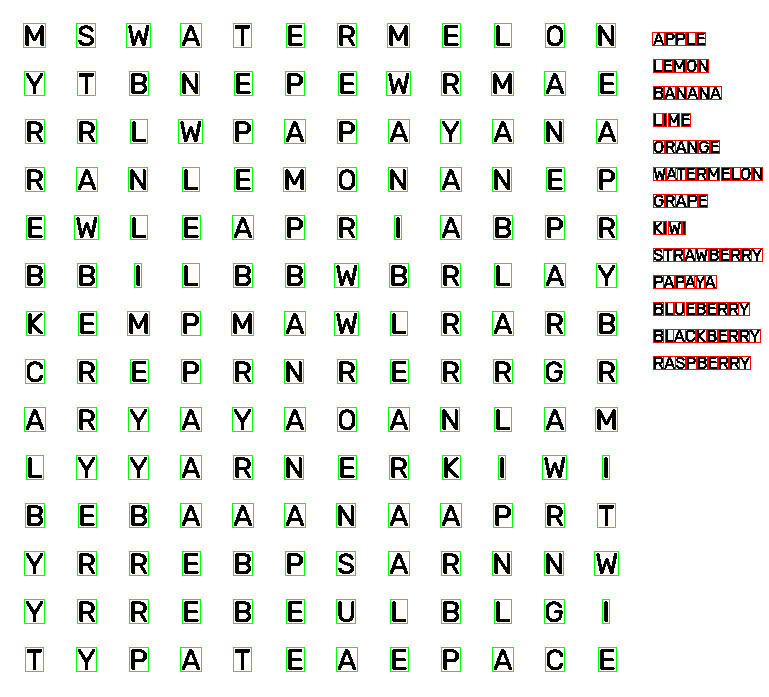
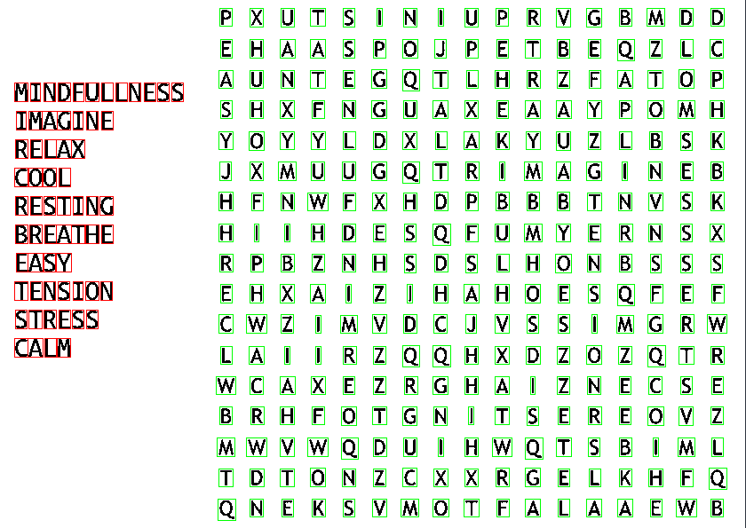
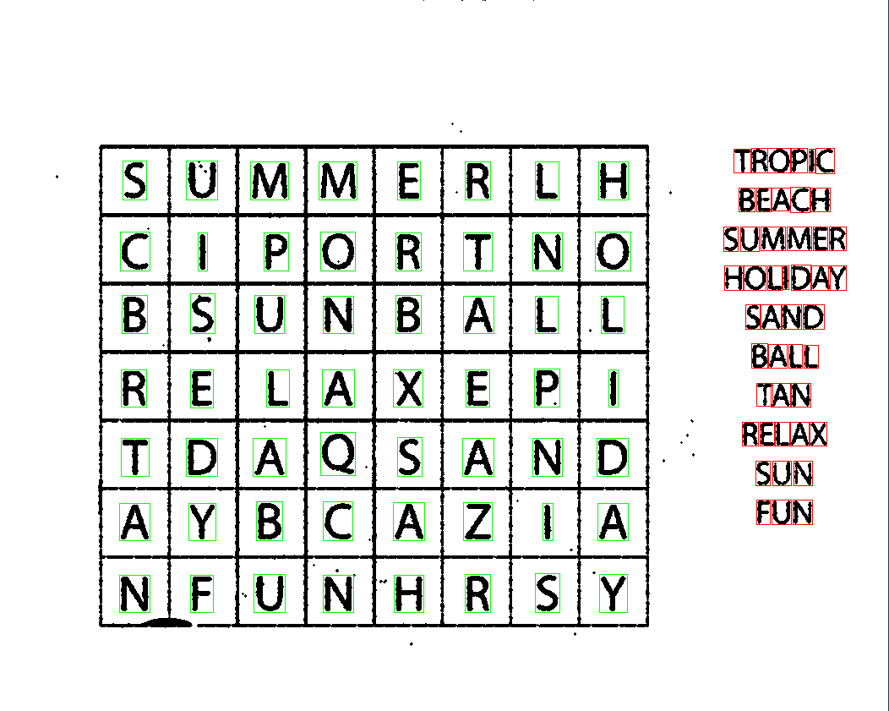
Prétraitement d'images
Amélioration de la qualité visuelle grâce à une conversion progressive de l’image : d’abord en niveaux de gris, puis en noir et blanc. Le bruit est ensuite supprimé à l’aide de fonctions spécifiques adaptées au niveau de bruit détecté, évalué par une fonction dédiée. Une fonction de rotation automatique ajuste l’image si nécessaire en fonction de l’orientation de la grille.
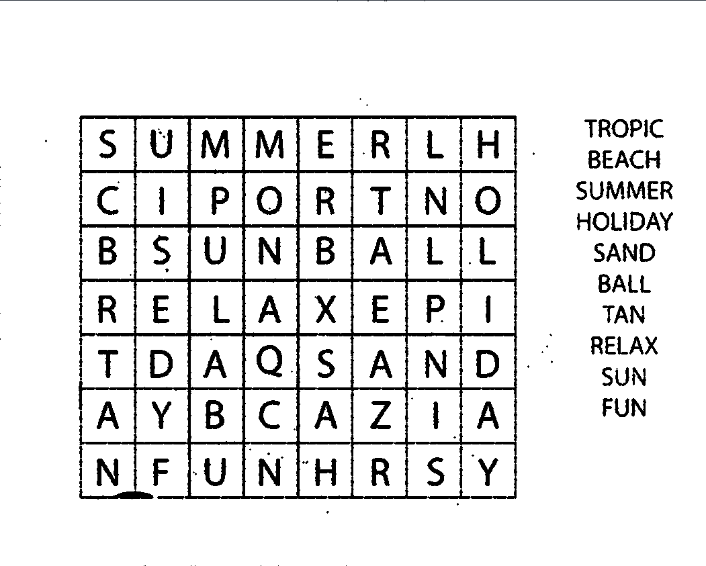
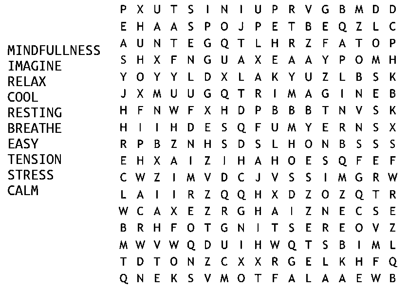
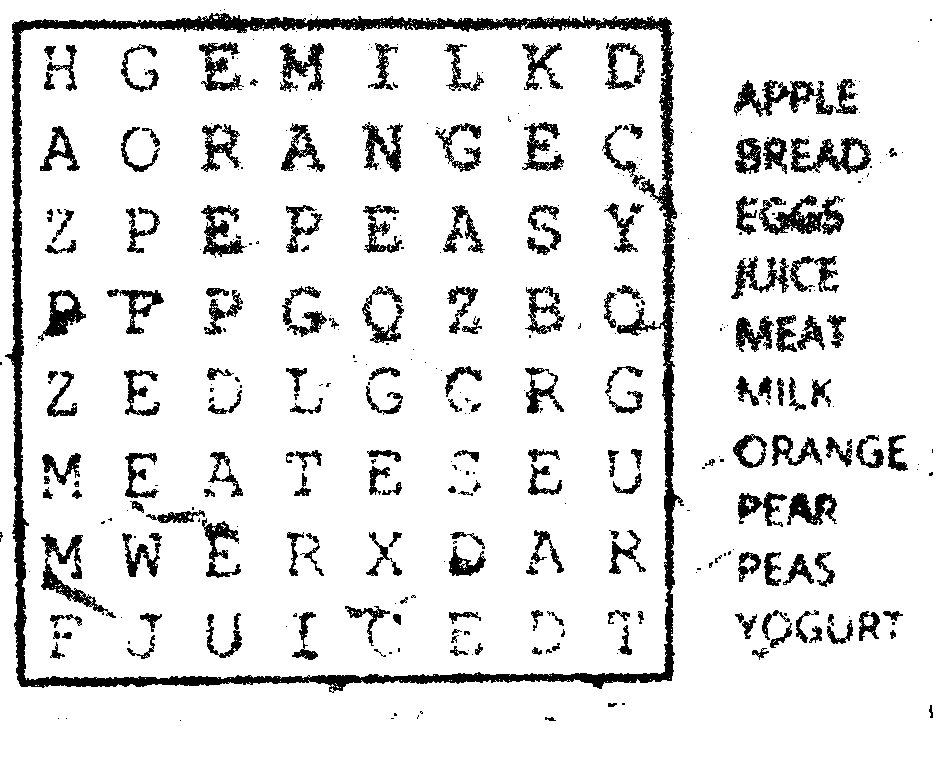
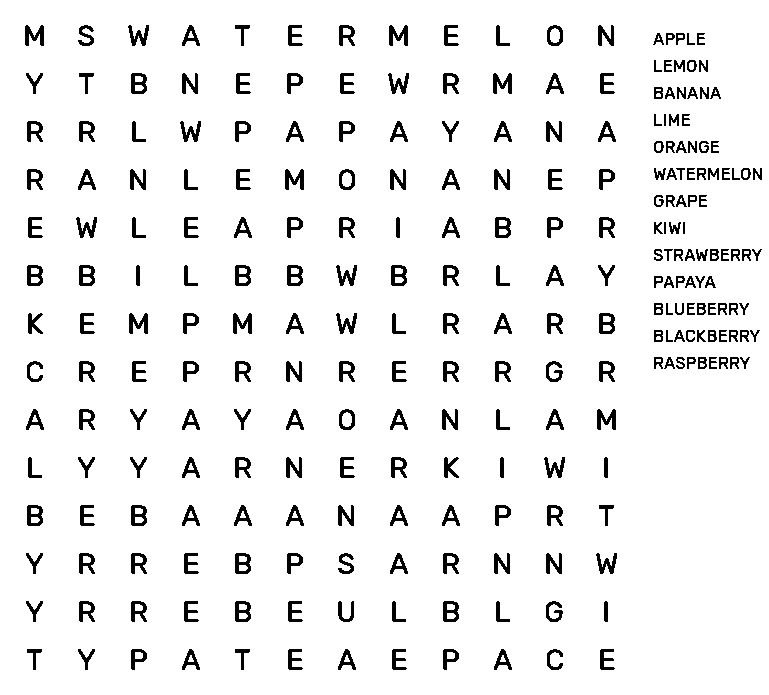
Résolution de grilles
Extraction et encadrement visuel des mots recherchés dans les grilles, en s'appuyant sur la position des lettres détectées sur l'image. Les mots sont identifiés en tenant compte des directions horizontales, verticales et diagonales, garantissant une précision optimale.
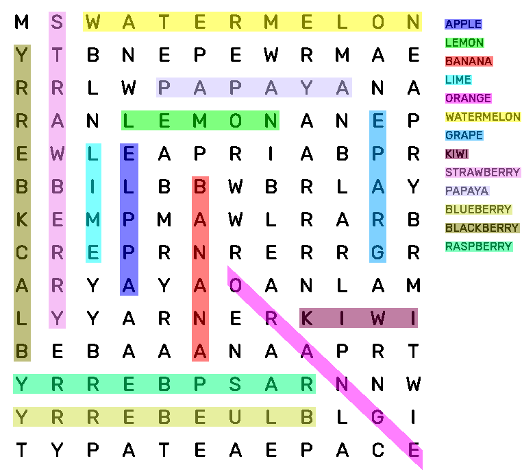
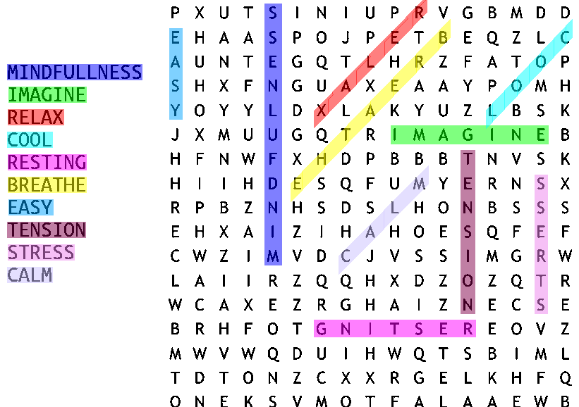
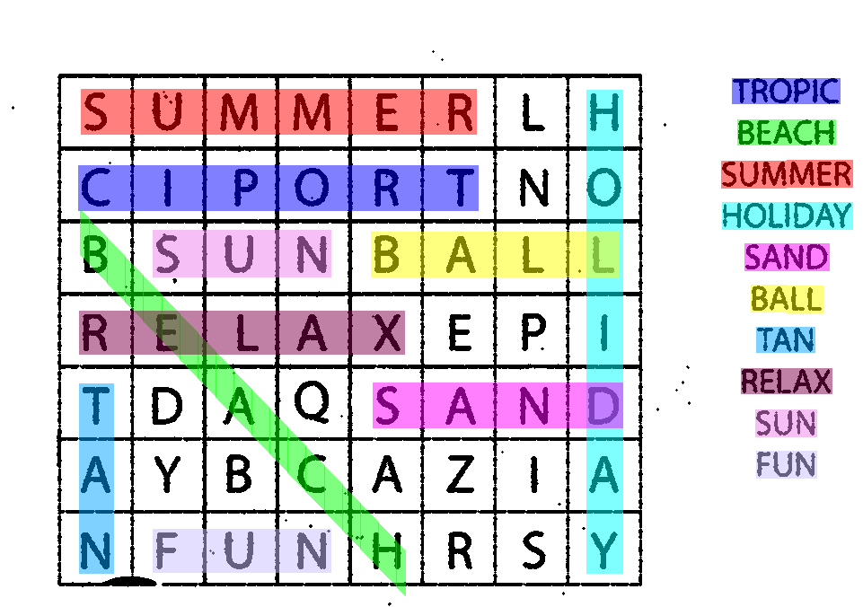
Réseau de neurones
Utilisation de CNN entraînés sur des données variées pour une reconnaissance fiable, même sur des images déformées ou bruitées.
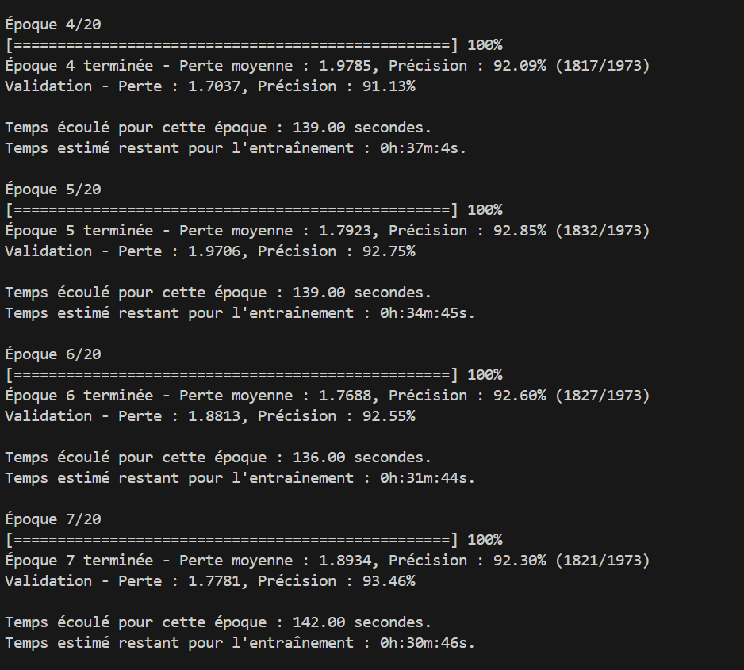

Équipe & Contact
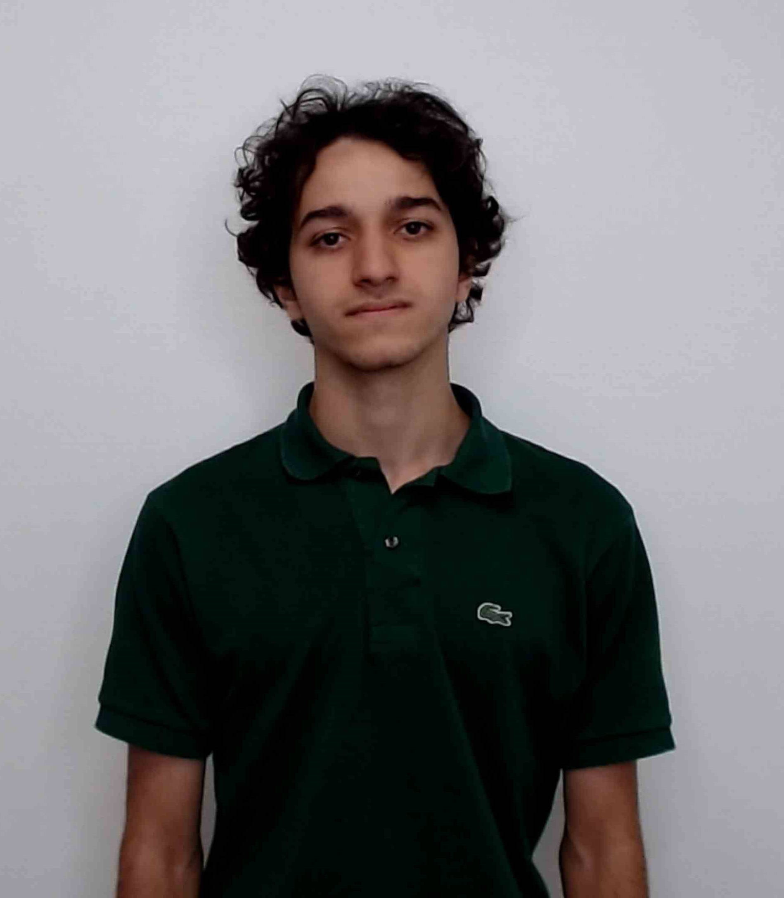
Youcef ZAHRA
Développeur de la détection des lettres et prétraitement des images.
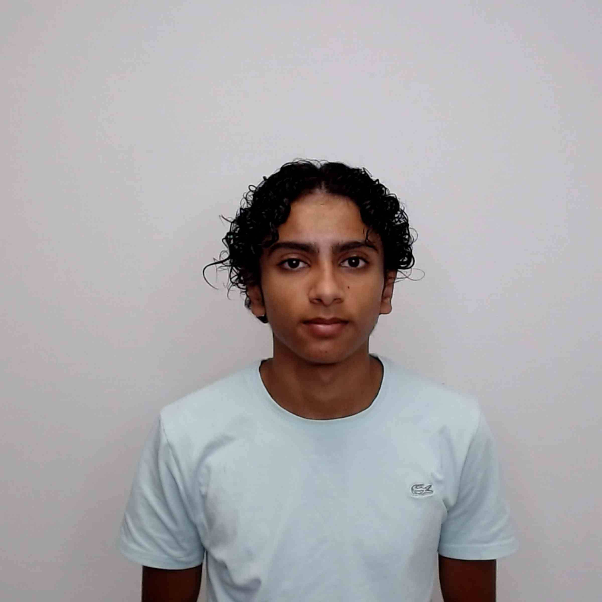
Jessim ZIANI
Développeur du traitement des images et prétraitement.
Wael AHKDAR
Chef de projet et développeur de l'intelligence artificielle.